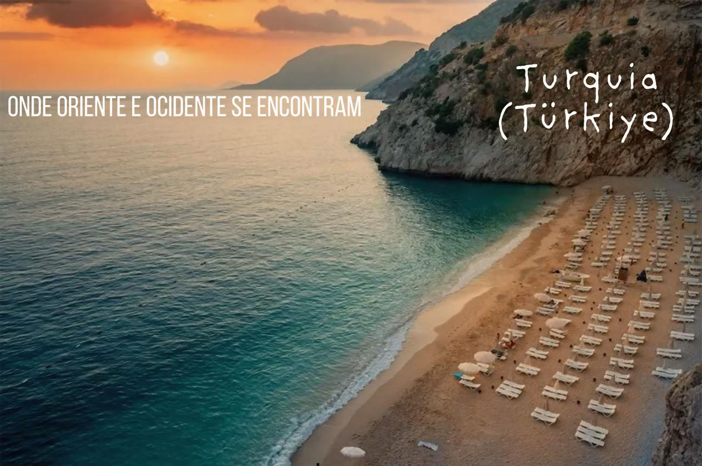
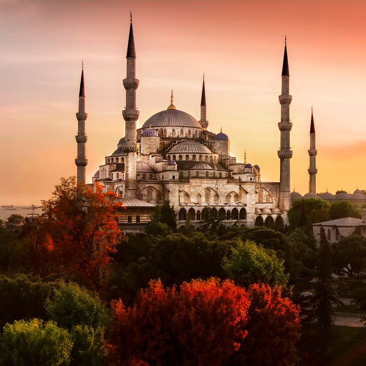
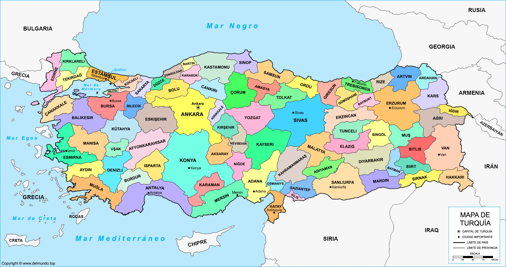

Explore a fascinante terra que une dois continentes, repleta de história milenar, paisagens deslumbrantes e sabores inesquecíveis com o ‘Olá, Turquia!’
A Turquia é um país transcontinental situado entre a Ásia e a Europa. É uma das principais nações emergentes do globo e possui grande poder geopolítico em nível regional. A formação do Estado moderno da Turquia ocorreu após o fim da Primeira Guerra Mundial (1914–1918). Atualmente, ela é um país emergente, com grande população absoluta e vasto parque industrial. Os turcos possuem adversidades históricas com vários países vizinhos e detêm um grande aparato militar. A Turquia é um país-membro da Organização do Tratado do Atlântico Norte (OTAN) e busca o ingresso na União Europeia (UE). Sua cultura é fortemente influenciada pelo islamismo, a religião predominante no país.

Resumo sobre a Turquia
- A Turquia é um importante centro regional de turismo e de negócios que está situado entre a Europa e a Ásia.
- A formação do Estado moderno da Turquia ocorreu após o fim da Primeira Guerra Mundial (1914-1918).
- A Turquia está geograficamente localizada entre a porção mais sudeste da Europa e a mais sudoeste da Ásia.
- As maiores cidades em população dela são: Istambul, Ancara, Esmirna, Bursa, Adana, Gaziantep e Cônia.
- Sua economia é diversificada, com destaque para o grande parque industrial e para a oferta de serviços turísticos.
- O país tem se modernizado ao longo das últimas décadas em razão da aproximação cultural com os países europeus.
Dados Gerais
- Nome oficial: República da Turquia
- Gentílico: turco
- Extensão territorial: 783.562 quilômetros quadrados
- Localização: Europa e Ásia
- Capital: Ancara
- Clima: temperado
- Governo: república presidencialista
- Idioma: turco
- Religiões:
- 90% (islamismo)
- 9% (ateísmo)
- 1% (outras)
- População: 85.043.000 habitantes
- Densidade demográfica: 110 habitantes/quilômetro quadrado
- Índice de Desenvolvimento Humano (IDH): 0,820 (elevado)
- Moeda: Lira turca
- Produto Interno Bruto (PIB): US$ 844,53 bilhões
- PIB per capita: US$ 9860
- Gini: 41%
- Fuso horário: UTC+3
- Relações exteriores:
- Organização das Nações Unidas (ONU)
- Organização do Tratado do Atlântico Norte (Otan)
- Organização para a Cooperação e Desenvolvimento Econômico (OCDE)
- Divisão administrativa: sete regiões, sendo elas:
- Egeu
- Anatólia Oriental
- Sudeste da Anatólia
- Mar Negro
- Mármara
- Anatólia Central
- Mediterrâneo
Geografia da Turquia
A Turquia está localizada entre a porção mais sudeste da Europa e a mais sudoeste da Ásia. O território turco faz fronteira com Bulgária, Grécia, Geórgia, Armênia, Irã, Iraque e Síria. Os mares que banham a Turquia são o Mármara, o Negro, o Egeu e o Mediterrâneo.
- Relevo da Turquia: é bastante heterogêneo, com forte presença de montanhas no interior, fruto de processos geomorfológicos recentes chamados de dobramentos modernos. As planícies estão concentradas ao longo do litoral do país. A Turquia é uma região sujeita a inúmeros tremores de terra e registrou fortes terremotos ao longo da sua história.
- Clima da Turquia: é do tipo temperado, com variações fortemente influenciadas pela presença de umidade.
- Regiões litorâneas: clima mais ameno e chuvoso, com tendência mediterrânica.
- Interior: clima temperado continental, mais seco e com maiores amplitudes térmicas.
- Vegetação da Turquia:
- Predominância de estepes.
- Litoral: vegetação mediterrânica.
- Interior úmido: manchas de floresta temperada.
- Hidrografia:
- Presença de rios extensos e importantes, como o Kura e o Aras.
- O país abriga as nascentes dos rios Tigres e Eufrates.
- Mapa da Turquia

Demografia
A Turquia possui cerca de 85 milhões de habitantes. O país é considerado muito populoso e povoado. A maior parte da população mora nas cidades. Em termos populacionais, as maiores cidades da Turquia são: Istambul, Ancara, Esmirna, Bursa, Adana, Gaziantep e Cônia. A população é formada principalmente por turcos nativos e curdos. A taxa de natalidade do país é positiva, e os turcos vêm apresentando forte envelhecimento populacional. A emigração, especialmente para a Europa, também é um fenômeno recorrente na Turquia.